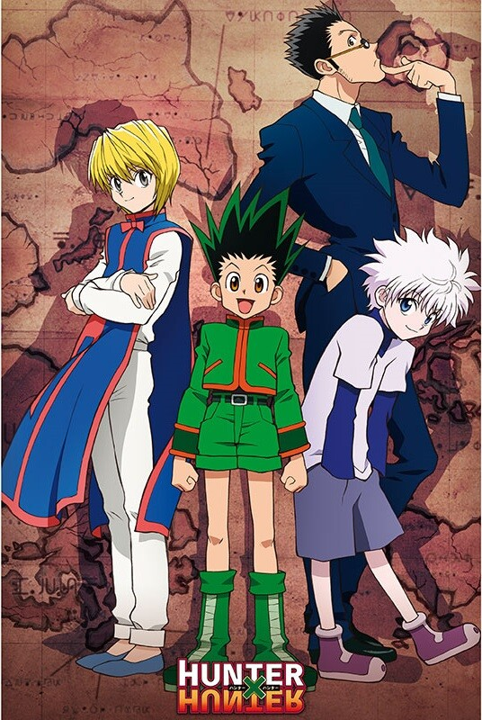

Even though shonen can be derided for its formulaic nature, it still remains one of the most popular anime genres. That’s largely due to the fact that most series know what they’re best at and stick to it — impressive fight scenes, strong and often likable character archetypes, and powerful stories surrounding themes of friendship, family, and being an all-around decent person.
Over the years, there’s been no shortage of impressive shonen anime thanks both to Shonen Jump and its many competitors. It's a hot debate in anime fandoms as to which titles are the cream of the crop. However, the best titles are sure to offer something unique.
Updated by Sarah Martin on October 16th, 2022: Shonen is, arguably, the most famous genre of anime. With classic titles such as Naruto and Dragon Ball under its belt, its no question why the genre has become such a titan in the medium. However, there are several new-generation classics that prove the genre's versatility. Shonen anime isn't just about earth-shattering fights and intense training arcs. However, these elements certainly helped pave the way for the genre. We've spruced this list up with even more amazing shonen titles and added more information about the anime that were already listed.
20 YuYu Hakusho (1992-1994)
112 Episodes
YuYu Hakusho is shonen anime distilled down to its very best: A cast of impossibly cool tough guys duking it out with awesome, terrifying villains. Yoshihiro Togashi’s first major series, the mangaka mastered the shonen formula on his first try with the story of Yusuke Urameshi, a teenage delinquent who becomes a detective for the afterlife once he’s brought back to life for saving a young girl.
Aside from executing every shonen trope about as well as possible, the best thing about Yu Yu Hakusho is it's not too short, nor does it overstay its welcome — 112 solid episodes of goodness, then the credits roll. Plus, it has one of anime's most iconic opening theme songs and one of shonen's best training arcs.
19 Demon Slayer (2019-Present)
37 Episodes
Demon Slayer is considered one of shonen's new "big three," alongside My Hero Academia and Jujutsu Kaisen. The series doesn't reinvent the wheel, but it's one of the most unique titles shonen has to offer. With an interesting premise and a beautiful art style, there's no question why the series is so alluring.
Fans love Demon Slayer because the series is full of lovable characters and plenty of exciting fight scenes. The anime doesn't waste time with unnecessary filler episodes, so every scene is sure to pack a punch. Additionally, MAPPA Studios did a brilliant job bringing the series to life.
18 Death Note (2006-2007)
37 Episodes
For many people, Death Note is their first taste of anime. While it isn't a battle shonen, it's still one of the genre's most enticing titles. With a tense game of cat-and-mouse between Light Yagami and L Lawliet , viewers are forced to examine what morality and justice truly mean to them.
Death Note is a tight psychological war between two geniuses. One declared himself God, and the other seeks to put an end to his reign of tyranny. It's titles like Death Note that prove just how diverse shonen can truly be.
17 Haikyuu! (2014-Present)
85 Episodes
Shonen isn't just about fantastical powers and intense battles between good and evil. Haikyuu! takes the intensity of a classic shonen slugfest and applies it to volleyball. Even viewers who don't know anything about the sport will surely become obsessed with Haikyuu! because of its character-driven, dynamic storytelling.
Haikyuu! set the standard for sports anime. Every time Karasuno wins, the viewers are bound to celebrate alongside their favorite characters. Likewise, fans will mourn their losses and root for them as they pick themselves up to prepare for the next tournament.
16 Jujutsu Kaisen (2022 - Present)
24 Episodes
After its anime adaptation aired during the Fall 2020 season, Jujutsu Kaisen took the world by storm. In 2021, its manga sold about 31 million copies worldwide. Fans love the series for a variety of reasons. Not only does Jujutsu Kaisen have an extensive cast full of lovable characters, but it's full of unique fight scenes that are revolutionary by shonen standards.
Jujutsu Kaisen takes the most common tropes from shonen anime and reinvents them. The series doesn't fear veering into the dark side — in fact, the series' darkest moments are when Yuji Itadori truly shines. Yuji is a shonen protagonist unlike any other, and he constantly innovates the tried-and-true tropes set by his contemporaries.
15 Black Clover (2017-2021)
170 Episodes
Black Clover is one of the newer shonen anime around, but it's already attracted a large and impressive fanbase. The show started airing in 2017 and is still ongoing. It was created by Studio Pierrot, which is the studio behind other huge shonen hits like Naruto and Bleach.
Black Clover follows two young boys named Asta and Yuno, who were both abandoned as children and raised together. Their one goal is to become the Wizard King, which is the most powerful mage in the land.
14 Attack On Titan (2013-Present)
87 Episodes
Many people have argued about whether Attack on Titan should be considered a shonen anime or not, but the fact remains that it was originally published in a shonen magazine and contains several elements of the genre. It's one of the most popular anime series of all time.
Attack on Titan follows Eren Jaeger after he joins the Survey Corps to avenge his mother who was eaten by a man-eating Titan after the walls surrounding his hometown fell. Attack On Titan is an action-packed masterpiece that was handled beautifully by both WIT Studio and MAPPA.
13 Gintama (2007-2018)
367 Episodes
Gintama has been ongoing for decades. It's a shonen anime that all fans of the genre should watch. It's a hilarious title that takes a simple premise and turns it into an absolute masterpiece. With hundreds of running gags in the series and a lovable cast, it's no question why Gintama left such a mark on the anime world.
Gintama's storytelling is genius. It blends absurdist comedy with absolutely tear-jerking storylines — an unlikely pair that could beat any full house. Plus, Gintoki is a lovable protagonist and fans are sure to relate to him in more ways than one.
12 Bleach (2005-2002)
418 Episodes
Bleach is considered one of the "big three" in shonen anime alongside Naruto and One Piece. Out of the three, Bleach is the one that shonen fans seem to like the least, thanks in part to its gratuitous use of filler. That doesn't mean that the franchise still isn't popular.
On the contrary, however, Bleach is still very popular, and it has finally made a return to television screens with its recent Thousand-Year Blood War anime sequel. The main character, Ichigo Kurosaki, is a high school student who becomes a Soul Reaper with the job of protecting people from malevolent spirits known as Hollows.
11 Spy X Family (2022-Present)
25 Episodes
Shonen anime is a diverse genre, and shows like Spy X Family prove this. Most people go into a new shonen series expecting intense battles with unique power systems as the heroes fight against villains. Spy X Family, though action-packed, is much different and focuses more on its lighthearted themes of found family and even has a probable romantic subplot between Yor and Loid.
Spy X Family follows Loid Forger, a talented spy who is tasked with infiltrating a prestigious academy to take down a powerful politician. Loid must get married and adopt a child to succeed. Loid adopts Anya, a young telepath. Then, he married Yor, a secret assassin who goes by the name "Thorn Princess." Spy X Family was a breakout series in 2022 and fans can't wait to see how this chaotic story turns out.
10 Assassination Classroom (2015-2016)
47 Episodes
Assassination Classroom takes place at Kunugigaoka Middle School. It's an elite school with a harsh hierarchy system, and the academy's lowest performers are exiled to a building off campus for their studies. Class 3-E had little to no chance of improving their grades until Koro-sensei came along. He's an eccentric monster who resembles a big yellow octopus and Class 3-E must successfully assassinate him before he destroys the planet.
Assassination Classroom has a lovable cast of characters. Though the students are supposed to kill him, it's extremely hard to dislike Koro-sensei. He's the best teacher these kids have had. Most of Assassination Classroom is lighthearted, fun, and upbeat, but its ending is a real tear-jerker.
9 Fairy Tail (2009-2018)
328 Episodes
Hiro Mashima’s story of a guild of magic users who for some reason like to punch, kick, and slice things more than actually casting spells has enjoyed a great deal of popularity over the last decade. Fairy Tail has come back not once but twice — with the recent version winding down the original manga’s storyline.
Fairy Tail is best known for its likable cast and absurd scenarios. While some argue that it's a rip-off of its contemporaries such as One Piece, there's no denying that it's still a great anime worth watching.
8 MHA (2016-Present)
120 Episodes
Welcome to the adventures of Class 1-A, full of the Best Boys and Best Girls that anime has to offer. The lead Best Boy is Izuku Midoriya, a young teenager who starts out without superpowers in a world where almost everyone has a Quirk. When Midoriya meets his idol and biggest superhero of them all, All Might, he winds up pulled into an adventure that will lead to him becoming the greatest hero ever.
My Hero Academia might not be doing anything wholly new, but author Kohei Horikoshi is taking the tropes of the genre and executing them better than anyone else in the game right now. The only thing holding the series back is it's simply too new, with the franchise only starting in 2016.
7 Naruto (2002-2017)
720 Episodes
Masashi Kishimoto’s story of a young ninja rejected by his city and working to one day become the leader of his village captured the imagination of every kid and teenager who grew up in the 2000s. Alongside Bleach and One Piece, Naruto would become part of Shonen Jump’s "big three." While Bleach lost quite a bit of its luster by the end, Naruto was just as strong as ever when it finished.
Naruto was so popular it even wound up inspiring a legacy manga series based on Naruto’s son, Boruto, adding a generational aspect to the series. The only thing holding this series back from even greater heights is the absurd amount of filler.
6 Dragon Ball Z (1990-1996)
291 Episodes
Even though Dragon Ball Z isn’t the first shonen anime ever, it’s definitely the most influential. In one way or another, almost every other hit shonen series has taken inspiration from Dragon Ball Z. After all, a shonen series is nothing without transformations and training sequences. Even time skips were popularized with this series.
Dragon Ball Z’s lack of character development and generally simplistic plots can leave something to be desired even amongst shonen fans, but one must pay homage to the genre’s origins and acknowledge Dragon Ball Z as one of the most popular series of all time.
5 One Piece (1999-Present)
1,035 Episodes
There are some pretty strong arguments for Eiichiro Oda’s saga of Monkey D. Luffy and his gang of pirates in search of ultimate treasure being the best shonen series of them all. It stands as the most popular of Shonen Jump’s "big three" over twenty years after it began, and Oda just keeps surprising people with new reveals and callbacks to plotlines from years prior.
Supposedly, Oda is almost done with the storyline now. However, if there’s one flaw to One Piece, it has to be the pacing. Twenty years of storytelling means the anime has to use quite a few tricks to slow things down and not outpace the manga.
4 Komi Can't Communicate (2021-Present)
24 Episodes
Komi Can't Communicate is another anime that proves shonen isn't all about action-packed battles and intense characters. Its manga was published in Weekly Shonen Sunday, making it a definite shonen title. Komi Can't Communicate follows Komi Shoko, a high schooler with severe social anxiety that makes it extremely difficult for her to talk to other people. However, she has a goal of making 100 friends by the end of her high school career.
Enter Tadano, Komi's first friend who found that communicating through written notes is an effective way of talking. From there, Komi's life turns upside down as she befriends the entire school and experiences all kinds of wacky things along the way. Komi Can't Communicate has a lovable ensemble cast with all kinds of personalities, from the emo otaku, Nakanaka to the chaotic nonbinary spitfire, Najimi.
3 Hunter X Hunter (2011-Present)
158 Episodes

The world of Hunter x Hunter is dangerous. At any moment, any character could make a poor decision or run into the wrong character, and wind up very, very dead. This is a world where, more often than not, even the main character is struggling to avoid being killed by vastly more powerful opponents, creating a constant sense of tension even when they’re in the midst of a grand adventure.
In this world, creator Yoshihiro Togashi deconstructs much of what makes this shonen series work and reassembles the tropes in a way to serve him, rather than the other way around. It’s the superb amount of thought he puts into every arc and character that makes it forgivable that Togashi releases basically 20 chapters a year.
2 Fullmetal Alchemist: Brotherhood (2009-2010)
68 Episodes
Edward and Alphonse Elric’s journey to recover their bodies after a mistaken attempt to bring their mother back to life using alchemy is definitely one of the most captivating stories in anime. That’s why it’s no surprise Hiromu Arakawa’s manga received a second adaptation once it was clear her story was winding down.
Admittedly, Fullmetal Alchemist:Brotherhood’s early parts aren’t quite as strong as the original series as it moves too fast. But that’s because it has so much more to get to. New plot twists and character development come at a breathless pace before finally giving viewers a wonderfully satisfying ending, providing fans with not only one of the best shonen anime ever but one of the best anime ever.
1 JoJo's Bizarre Adventure (2012-Present)
190 Episodes
Before reinventing itself as a seinen with the beginning of Steel Ball Run, JoJo's Bizarre Adventure was a revolutionary title in the shonen genre. It's been going on since the late '80s, and Hirohiko Araki is showing no signs of slowing down. Anybody who calls themselves a fan of shonen needs to watch this anime.
JoJo's is a generational storyline that constantly reinvents itself. It's a true ground-breaker for the genre, and with every new part, its campiness and absurdity only increase. JoJo's has become such a cultural phenomenon that other anime series blatantly reference it. Most notably, other series have incorporated the "menacing" onomatopoeia, and some characters have done JoJo's poses or mimicked the Joestars' battle cries.